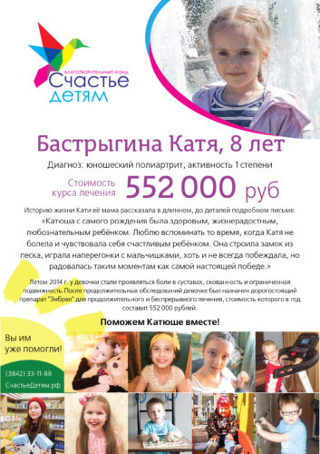
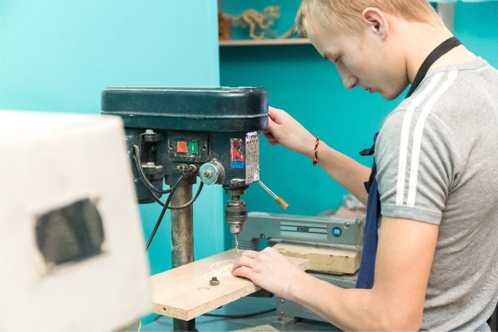
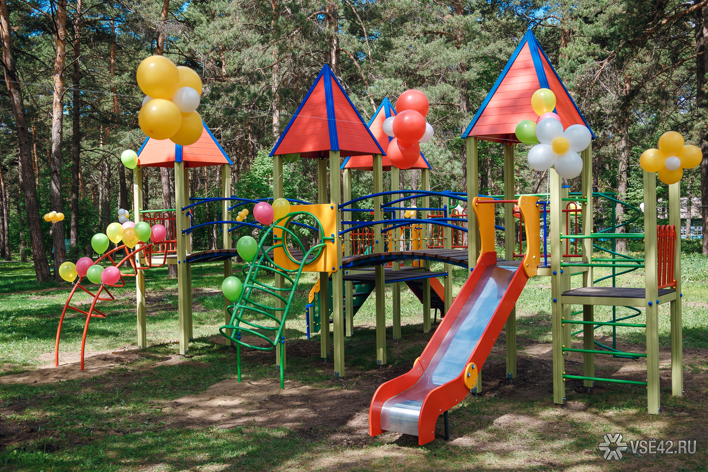

В конце сентября этого года благотворительному фонду «Счастье детям», одним из учредителей которого я являюсь, исполнилось три года. Мы подводили итоги в пресс-центре кемеровского отделения Сбербанка, из которого когда-то сам фонд и вышел.
Важное замечание: если вы начали читать этот текст, пожалуйста, не пролистывайте и видеосюжеты. Именно в них вы увидите, то, чем живёт фонд.
Я уже однажды писал о том, почему благотворительность должна быть публичной. Так как на пресс-конференции смогли присутствовать не все, я решил написать пост об итогах работы фонда за эти три года. На самом деле, подвести их и для себя.
В течение трёх лет мы работали по трём основным направлениям.
Адресная помощь детям
Первое, самое важное, направление деятельности фонда. Сегодня в Кузбассе установлено более 200 кубов фонда. Кубы установлены в магазинах, банках, АЗС, аптеках, ресторанах, кафе и офисах. Количество кубов для пожертвований постоянно растёт, сотрудники фонда ежедневно работают на поиском новых организаций, которые могут установить себе такой куб. В работе над расширением сети кубов активно участвуют и учредители фонда, среди которых много известных в Кузбассе предпринимателей.
На каждом кубе размещена фотография ребёнка, для которого собираются деньги. Именно поэтому мы говорим об адресной помощи. Кроме фотографии на листовке мы публикуем краткую историю болезни ребёнка, диагноз и сумму, необходимую для лечения или реабилитации.

Кубы периодически инкассируются. В фонде посчитали: за три года работы фонда было проинкассировано 3744 куба и вручную пересчитано 938 кг монет. Стоит отметить, что в инкассации фонду несколько лет совершенно бесплатно помогает охранное предприятие «Град». Когда фонд начал работать в Новокузнецке, местное ЧОП «Русич» также откликнулось на просьбу о помощи.
55 детей получили за время работы фонда адресную помощь. Её совокупный объём составил 10 655 145 рублей. Благодаря жителям Кузбасса, при содействии фонда, 55 детей смогли пройти дорогостоящий курс реабилитации, получить инвалидную коляску, излечиться от болезни, требующей дорогостоящего лечения.
Одним из таких заболеваний является, к примеру, ювенильный артрит. Фонд довольно часто старается помочь детям с таким заболеванием. И это как раз тот случай, когда деньги буквально спасают жизнь. Причиной ювенильного артрита может быть как наследственная предрасположенность, так и банальное переохлаждение. Болезнь поражает детские суставы, и, если её не начать лечить, вероятность инвалидности очень высока. В то же время, если начать лечение вовремя, и потратить на него деньги (около 100 тысяч рублей в месяц с курсом от полугода), то прогноз обычно бывает благополучным. Такие расходы для большинства семей становятся непосильной ношей, и справиться с ними можно только с чьей-то помощью.
Социально-психологическая реабилитация детей
Кроме адресной помощи конкретным детям фонд помогает и организациям, которые работают с детьми. Надо заметить, что финансируются такие проекты, как правило коммерческими компаниями при посредничестве фонда. Здесь стоит выделить два проекта.
Проект «Учимся жить»
Этот проект родился в результате сотрудничества фонда с социально-реабилитационным центром «Маленький принц». В этот центр попадают дети, оставшиеся по разным причинам без попечения родителей. Но это не детский дом. В «Маленьком принце» дети находятся относительно короткое время, пока родители справляются со сложной жизненной ситуацией или органы опеки делают это за родителей.
Фонд почти с самого появления сотрудничает с «Маленьким принцем» — так, к примеру, в 2013 году актриса Ольга Редько читала детям, находящимся в центре, сказку.
Спустя некоторое время на работу фонда обратила компания МегаФон в лице руководителя кемеровского филиала Марка Малахова. Сотовый оператор предложил фонду профинансировать для социально-реабилитационного центра проект «Учимся жить», после успешной защиты проекта президентом фонда Яной Кудашкиной в Москве.
МегаФон профинансировал 2/3 проекта, ещё 1/3 удалось набрать с помощью краудфандинга на сайте Планета. Именно эта самостоятельно набранная треть была одним из условий финансирования проекта Мегафоном.
Смысл проекта в том, чтобы за короткий период нахождения в социально-реабилитационном центре постараться привить детям практические навыки, которые им пригодятся в жизни, даже во взрослой жизни. В рамках проекта в «Маленьком принце» была оборудована студия кулинарии, где дети учатся готовить себе обед, студия швейного мастерства, трудовая мастерская и магазин «Матрёшка». В этом магазине дети могут купить необходимые себе вещи, за баллы, которые зарабатывают свои трудом.

Таким образом дети имеют возможность понять ценность труда и относиться иначе к заработанным самостоятельно деньгам. Стоимость проекта составила 1402032,10 рубля
Проект «Мир добра»
В рамках этого проекта в медицинские учреждения области два раза в неделю приходят социальные психологи, педагоги и волонтёры. На несколько часов дети имеют возможность забыть о болезни, лечении и врачах и превратиться на время из пациентов в обычных детей. Сегодня проект реализуется в 3 учреждениях:
- Кемеровская областная клиническая больница
- Детская клиническая больница №1, г.Кемерово
- СРЦ «Берег надежды», г.Новокузнецк
Начальное финансирование проекта — 961000 рублей. Проект относительно молодой, и мы постоянно ищем для него новых спонсоров.
Поддержка развития спорта в Кузбассе
Как известно, лучший способ предупредить болезнь — профилактика. Тот, кто занимается спортом, закаляет не только тело, но и дух. И мы очень рады, что одним из наших направлений стала поддержка развития спорта. «Заниматься спортом» фонд смог в основном благодаря сотрудничеству с Сибирской генерирующей компанией. Именно это предприятие выделило 1952972,04 рубля на установку четырёх детский спортивных площадок
- территория МБУЗ «Детская клиническая больница №1»
- сосновый бор, г.Кемерово
- сквер Территориального управления Ленинского района г.Кемерово
- г. Новокузнецк, ул.Дружбы, 42-46

С помощью Сибирской генерирующей компании прошлой зимой мы открыли в кемеровском бору лыжный прокат «Зимнее счастье», сумма финансирования 150000 рублей. В прокат, при поддержке администрации города, были переданы 67 новых комплектов лыж, которыми совершенно бесплатно могут пользоваться кемеровские дети.
Были за эти 3 года и проекты «для души».
Это благотворительная акция «Счастливый лес», вместе с сотрудниками десятка предприятий города мы посадили 8000 сосен в Рудничном районе Кемерова.
Благотворительный волейбольный турнир на кубок фонда «Счастье детям» в СК «Арена»
Благотворительный забег на площади Советов на День Шахтеров 29 августа 2015 г. В пробеге приняло участие более 3000 человек, а на деньги, собранные на пробеге мы купили инвалидную кресло-коляска для Некрасовой Натальи из Новокузнецка.
Благотворительный ночной забег вместе со школой правильного бега I LOVE RUNNING
Благотворительный спектакль в Театре для детей и молодёжи под руководством Забавина Григория Львовича. Один раз в год в театре играют спектакль, все деньги от которого театр передаёт в фонд.
Я не буду писать о том, что нужно, чтобы помочь фонду — на сайте фонда есть вся информация об этом. Просто скажу вам «спасибо» за то, что дочитали этот текст до конца. Будет неплохо, если вы отправите ссылку на этот пост своим знакомым, поделитесь им в социальных сетях, а может быть в следующий раз даже не пройдёте мимо куба. Я постарался вам рассказать зачем всё это нужно.